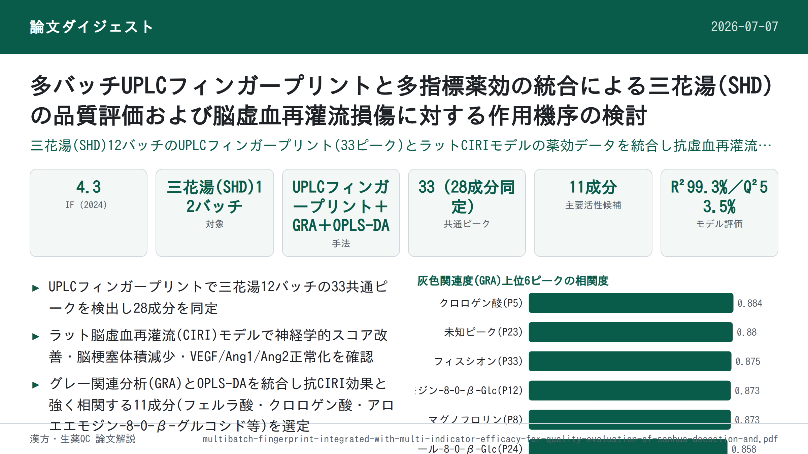

多バッチUPLCフィンガープリントと多指標薬効の統合による三花湯(SHD)の品質評価および脳虚血再灌流損傷に対する作用機序の検討

<!-- 方針: ほぼ全訳＋必要に応じた補足。原文の構成(1.序論〜6.結論)に沿って訳出。「> 補足:」は訳者注。 -->
書誌情報
- 標題（原題）: Multibatch Fingerprint Integrated with Multi-Indicator Efficacy for Quality Evaluation of Sanhua Decoction and Investigation of Its Mechanistic Basis against Cerebral Ischemia-Reperfusion Injury
- 著者・所属: Li Zhang, Xue-li Song, Guo Feng*, Tingting Liu, Xin-ping Wei, Zhi-min Lv, Shi-qiong Qin, Yun-li Wei, Gang Liu, Kexin Ma, Jinxin Hou, Wei Li, Yi Sui（貴州中医薬大学 中薬学部 ほか, 中国貴陽; 責任著者 Guo Feng は貴州省中薬炮製技術伝承基地も兼任）
- 掲載誌・巻号・DOI: ACS Omega 2025, 10, 56539–56554. https://doi.org/10.1021/acsomega.5c08547（オープンアクセス, CC BY-NC-ND 4.0）
- インパクトファクター: 4.3（ACS Omega, JCR 2024 / Clarivate。総被引用数 97,713件、多分野化学カテゴリで239誌中81位との報告あり）
- 受理経過: 受領 2025-08-26 / 改訂 2025-11-05 / 受理 2025-11-10 / 公開 2025-11-13
- 資金: 貴州中医薬大学 国家・省級科学技術イノベーション人材育成チームプロジェクト（貴中医TD和字[2024]001号）、貴州省「千人」レベル・イノベーション人材プロジェクト（Qrlf[2020]4号）、貴州中医薬大学（「千人レベル」人材）研究プロジェクト（ZQ2018001号）、貴州省中薬炮製技術伝承基地建設プロジェクト（黔中医函[2024]22号）、中央級増減支出プロジェクト（222060302号）、2024年度貴州省企業「科技副職」・「科技特派員」プロジェクト（黔科合人才KJZY[2025]060号）
補足: SHD = 三花湯（Sanhua Decoction）。大黄(Rheum palmatum, Dahuang)・枳実(Citrus aurantium, Zhishi)・厚朴(Magnolia officinalis, Houpo)・羌活(Notopterygium incisum, Qianghuo)の4味からなる古典名方で、中国政府が公布した「古典名方目録(第一陣)」の55番目の処方に収載される。CIRI = 脳虚血再灌流損傷(cerebral ischemia-reperfusion injury)。MCAO = 中大脳動脈閉塞モデル。GRA = 灰色関連分析(Gray Relational Analysis)。OPLS-DA = 直交部分最小二乗判別分析。本論文はSHDの「多バッチフィンガープリント×薬効評価」によるスペクトラム-エフェクト関係(chromatographic-efficacy relationship)解析の研究。同じ「サンファ」でも本サイトに既収載の「三黄瀉心湯(SHXXD)」とは全く別の処方なので混同注意。
要旨（Abstract）
中医学の「スペクトラム-エフェクト関係」理論に基づき、超高速液体クロマトグラフィー(UPLC)を用いて三花湯(SHD)12バッチのフィンガープリントを作成した。これらのプロファイルを薬理学的効力と関連付けて解析し、SHDの脳虚血再灌流損傷(CIRI)に対する物質的基盤および効力評価の新規戦略を提供した。UPLCフィンガープリントでは33の共通ピークが同定され、うち28の化学成分が特性化された。ラットCIRIモデルを用いた薬効評価では、SHDが神経学的欠損スコアを有意に改善し、脳梗塞体積を減少させ、脳組織病理を改善し、血管内皮増殖因子(VEGF)等の主要指標と相関することが示された。灰色関連分析(GRA)では、33ピーク中32ピークで効力との関連度が0.706を超え、SHDの抗CIRI作用における多成分の相乗効果が確認された。直交部分最小二乗判別分析(OPLS-DA)により、抗CIRI活性と有意に関連する11の潜在的主要活性化合物が同定された。化学的フィンガープリントと薬力学的指標を統合した「効力統合フィンガープリント(efficacy-integrated fingerprint)」を構築し、SHDの本質的品質を反映した。本手法は、SHDおよび他の中薬の化学成分研究と薬力学的物質基盤解明のための科学的かつ効率的なアプローチを提供する。
1. 序論（Introduction）
脳卒中(stroke)は世界的な死亡・長期障害の主要因であり、障害の主因としては世界第2位にランクされる。脳血管の破裂または閉塞に起因し、脳血流の急激な中断を招いて身体的障害と多系統機能不全をもたらす。脳卒中は一過性脳虚血発作(TIA)・出血性脳卒中・虚血性脳卒中の3型に分類され、このうち虚血性脳卒中が全体の80〜90%を占め、主に血栓症や塞栓による血流中断が原因である。高い罹患率・再発負担・死亡率・後遺障害を特徴とし、人々の生活の質と家族の負担を著しく損なう。中医学(TCM)ではこれを「中風(卒中)」に分類し、病理機序は気虚と瘀血に帰せられる。疫学データによれば、中国の虚血性脳卒中罹患率は2010年の10万人あたり129人から2019年には145人に増加した。
虚血ペナンブラへの速やかな血流再開が最も有効な治療戦略である一方、再灌流はパラドキシカルに神経細胞死を悪化させ、二次的脳損傷である脳虚血再灌流損傷(CIRI)を引き起こしうる。CIRIを効果的に軽減できる薬剤の開発は臨床転帰の改善に重要である。現行の治療法は標的特異性の低さ・作用機序の狭さ・消化器有害事象により限界があり、多面的な神経保護作用を持つ新規薬剤の同定が有望な方向性であり続けている。
三花湯(SHD)は中国政府が公布した「古典名方目録(第一陣)」の55番目の処方であり、大黄(Rheum palmatum)・枳実(Citrus aurantium)・厚朴(Magnolia officinalis)・羌活(Notopterygium incisum)からなる伝統的な処方で、脳卒中治療に広く用いられてきた。その治療効果は、腑の濁を除き、清濁の昇降を回復させ、気の流れを調整して生理的調和を促すことで達成されるとされ、これは中医学の内臓を通じた代謝・解毒の原則と一致する。現代の研究では、SHDが脳虚血再灌流損傷における血液脳関門・神経機能に対して保護作用を示し、抗炎症・抗酸化・血管内皮安定化などの経路を介する可能性が示されている。
にもかかわらず、CIRIに対するSHDの効力の分子基盤は十分に解明されておらず、特に(i) 生理活性成分と治療効果の関係が不明確であること、(ii) 脳脊髄液や脳実質など重要な脳領域における薬物由来成分の直接的な定量分析が欠如していること、という重要なギャップがある。SHDの化学プロファイリング研究の多くは処方全体ではなく個々の構成生薬に焦点を当ててきた。Zhaoら(文献18)はUPLC-FT-ICR MSによりSHD中137化合物を暫定同定した。Luoら(文献19)はUPLC-Q-Orbitrap-MSでSHDと構造的に類似した小承気湯を解析し、主に枳実・大黄由来のフラボノイドとアントラキノン123成分を同定したが、化学的網羅性は限定的であった。Liuら(文献20)はUPLC-Q-Exactive Orbitrap-MSでSHD中166化合物(フラボノイド・アントラキノン・クマリン・リグナン・アルカロイド)を同定し、Wangら(文献21)はUPLC-Q-TOF-MS/MSで大黄(Rhei Radix et Rhizoma)の役割解明に焦点を当て、標準品で確認した5種のアントラキノンアグリコンを中心にSHDの化学プロファイルを特性化した。しかし、これらの研究のいずれも、多成分の系統的な薬力学的検証や機序解析を実施していない。
フィンガープリントプロファイリングは、中薬の全体的な化学組成を効果的に特性化し、バッチ間の一貫性を保証し、生理活性成分の地域的マーカーを同定する手法であり、認証・品質管理の確立されたアプローチとなっている。化学計量学的解析と組み合わせることで、異なる産地間の品質差異の効率的な識別が可能になる。しかし、クロマトグラフィー・フィンガープリントは化学的均一性を確認できても、臨床効力との直接的な相関を欠く。そのため、化学プロファイルと治療転帰を結び付ける「スペクトラム-エフェクト関係」の確立が不可欠である。スペクトラム-エフェクト解析は、クロマトグラフィー・フィンガープリントと薬力学的データを統合し、線形または非線形モデルを用いて「スペクトラム-エフェクト」関係を定量的に定義し、効力に関連する活性成分を同定する。従来のフィンガープリンティングを超える革新的なパラダイムとして、中薬処方の薬力学的物質基盤を解明する新たなアプローチを提供する。
本研究では、SHDの脳虚血再灌流損傷(CIRI)に対する物質基盤を明らかにするため、スペクトラム-エフェクトモデルを構築し、SHDの本質的品質を反映する「効力統合フィンガープリント」を開発した。本研究の系統的アプローチは、(i) SHDの抗CIRI効果の薬力学的基盤の解明、(ii) 厳密な品質評価・効力検証枠組みの確立、を目的とする。本手法は、この古典名方の臨床応用に向けた新たな知見と分析戦略、確固たる科学的基盤を提供する。
2. 実験（Experimental Section）
2.1 実験生薬
すべての生薬は貴州中医薬大学薬学部のLi Wei教授により鑑定された。ランダム数表法を用いて4種の生薬(飲片)をランダムに組み合わせ、三花湯試料12バッチ(S1〜S12)を作製した(Table 1参照)。
Table 1. 三花湯12バッチの生薬産地・ロット情報
| No. | 大黄(産地/ロット) | 枳実(産地/ロット) | 厚朴(産地/ロット) | 羌活(産地/ロット) |
|---|---|---|---|---|
| S1 | 四川 / 2104030 | 重慶 / 210625 | 四川 / 210301 | 四川 / 210325 |
| S2 | 甘粛 / 220901 | 江西 / 220330 | 四川 / 220601 | 四川 / 220801 |
| S3 | 甘粛 / 210701 | 江西 / 220901 | 四川 / 221201 | 四川 / 221201 |
| S4 | 甘粛 / 220101 | 四川 / 220801 | 四川 / 220101 | 四川 / 220301 |
| S5 | 四川 / 220617 | 湖南 / 221011 | 四川 / 220615 | 四川 / 220829 |
| S6 | 四川 / 221210 | 江西 / 220401 | 四川 / 210801 | 四川 / 220829 |
| S7 | 四川 / 22040513 | 湖南 / 22120194 | 四川 / 220802981 | 四川 / 221203491 |
| S8 | 四川 / 202212002 | 四川 / 20230401 | 四川 / 230101 | 四川 / 202302001 |
| S9 | 四川 / 202204001 | 重慶 / 221001 | 四川 / 220401 | 四川 / 221001 |
| S10 | 四川 / C141230101 | 四川 / C648211101 | 四川 / Y220501 | 四川 / Y220801 |
| S11 | 甘粛 / 221201 | 四川 / 221201 | 四川 / 230101 | 四川 / 230102 |
| S12 | 甘粛 / 220826 | 江西 / 220901 | 四川 / 221201 | 四川 / 221201 |
補足: S7の一部ロット番号は原文でも8桁前後の長い数字列（例: 22040513、22120194）で記載されており、桁数の誤植の可能性があるが、原文の表記のまま転記した（原文参照）。
2.2 装置
超高速液体クロマトグラフィー(Agilent 1290; Agilent Technologies, 米国)＋ZORBAX Eclipse Plus C18カラム(4.6×250 mm, 5 μm)、電子分析天秤(XB220A; PRECISA, スイス)、CNC超音波洗浄機(KQ-500DE, 40 kHz/500 W; 昆山超声儀器)、マイクロプレートリーダー(Rayto RT-6100)、電気送風乾燥オーブン(101-3AB; 天津その斯特儀器)、マイクロ高速遠心機(TG16W, 最大15,000×g; 長沙湘智離心機)、卓上冷却高速遠心機(TGL16M, 最大16,000×g; 上海盧湘儀離心機)、恒温振とう機(HT-111B; 上海和田科学儀器)、組織包埋機(JB-P5; 武漢俊傑電子)、病理ミクロトーム(RM2016; Leica Microsystems)、正立光学顕微鏡(NIKON ECLIPSE E100)。
2.3 試薬
クロマトグラフィーグレード溶媒として、メタノール(ロット: 20200911; 国薬集団化学試薬)、アセトニトリル(ロット: 106245)、ギ酸(ロット: A17-50; Fisher Scientific)を使用した。標準品18成分は、マグノリンA(ロット: 230502)・B(ロット: 230415)(成都恒宝制薬)、アントラキノン配糖体類(ロット: 230319–230425; 成都恒宝)、フラボノイド標準品類(ロット: PS00024–PS011911; 成都普思生物科技)から構成される。主要生理活性成分——バイカリン、エモジン誘導体、マグノロール、ホオノキオール——は北京索莱宝科技(Solarbio)から購入した(ロット: 1101P022–1209E023)。ラット血管新生マーカー用ELISAキット3種はVEGF(製品番号 AF3055-A)、ANG-1(AF3045-A)、ANG-2(AF3055-B)で江蘇精美生物科技(ロット: AF20230731)より供給された。
補足: ELISAキットの製品番号は、後述2.5.2.4節（血清Ang1・Ang2・VEGF測定）では「AF3045-AがAng1用、AF3055-AがAng2/VEGF用」と記載されており、本節(2.3)の記載（VEGF=AF3055-A、ANG-1=AF3045-A、ANG-2=AF3055-B）と対応関係が完全には一致しない。原文の両方の記載をそのまま転記した（原文にも表記のゆれがある可能性。原文参照）。
2.4 動物
雄性SPF(特定病原体除去)Sprague-Dawleyラット(8週齢、体重200±20 g)を天勤生物科技(中国・長沙; 動物許可証番号 SCXK(湘)2022-0011)から購入した。すべての実験手順は施設内動物倫理委員会の承認プロトコル(承認番号 2023116)に従って実施した。動物は12時間明暗サイクル、温度25.0±2.0 ℃、相対湿度45.0±15.0%の条件下で、標準実験食とオートクレーブ済み飲水を自由摂取させて飼育した。
2.5 方法
2.5.1 フィンガープリントの確立
2.5.1.1 参照試料の調製: 文献記載の抽出手順および劉完素『素問病機気宜保命集』巻十「中風論」に準拠し、大黄(Rhei Radix et Rhizoma)・厚朴(Magnoliae Officinalis Cortex)・羌活(Notopterygii Rhizoma et Radix)・枳実(Aurantii Fructus Immaturus)各30.5 gを水2,831.4 mLとともに煎じた。30分間浸漬後、強火で沸騰させ、その後弱火で煎じ、体積が50%に減少するまで煮詰めた。熱いうちに濾過し、凍結乾燥機で凍結乾燥して参照材料を得た。
2.5.1.2 試験・参照溶液の調製: 試験試料溶液は、凍結乾燥した三花湯粉末0.15 gを正確に量り取り、25 mL共栓三角フラスコに移し、50%メタノール15 mLを加えて15分間超音波処理した後、室温まで冷却し、十分にボルテックスして濾過した。濾液を0.22 μmメンブレンフィルターで濾過して最終試料溶液を得た。参照標準溶液は、シネフリン・没食子酸・クロロゲン酸・シリンギン・マグノリンB・マグノフロリン・ダイジン・マグノリンA・フェルラ酸・アロエエモジン-8-O-β-グルコシド・レイン-8-O-β-グルコシド・ノダケニン(原文2.5.1.2節での表記; 後述Fig.6キャプションではピーク14を「デクルシン」と表記——後述補足参照)・ラポンチシン・ケルシトリン・ロイフォリン・センノシドA・ヘスペリジン・ネオヘスペリジン・エモジン-1-O-グルコシド・クリソファノール-8-O-β-グルコシド・アロエエモジン・レイン・ノビレチン・タンゲレチン・ホオノキオール・マグノロール・クリソファノール・フィスシオン(計28成分)を正確に量り取り、メタノールに溶解して混合参照標準溶液とした。
2.5.1.3 クロマトグラフィー条件: Waters ACQUITY UPLC BEH C18カラム(100 mm×2.1 mm, 1.7 μm)を用い、移動相A(0.1%ギ酸水)およびC(アセトニトリル)によるグラジエント溶出: 0–3分(5→12% C)、3–25分(12→15% C)、25–32分(15→18% C)、32–35分(18→21% C)、35–40分(21→30% C)、40–45分(30→45% C)、45–52分(45→75% C)、52–55分(75→95% C)。流速0.2 mL/min、カラム温度35 ℃。検出波長は0–17分を254 nm、17–38分を310 nm、38–55分を254 nmとした。注入量5 μL。
補足: 原文は移動相を「A(0.1%ギ酸水)」と「C(アセトニトリル)」と表記しており、B相の言及は見当たらない（原文の表記のまま転記。おそらく表記上の省略/誤植の可能性があるが、原文参照とする）。
2.5.1.4 精度試験: 同一バッチ(S1)の凍結乾燥粉末から、2.5.1.3節の手順で試験溶液を調製し、同条件で6回連続注入した。
2.5.1.5 再現性試験: 同一バッチ(S1)の凍結乾燥粉末から6個の並行試験溶液を調製し、同条件でそれぞれ注入した。
2.5.1.6 安定性試験: バッチS1の凍結乾燥粉末から試験溶液を調製し、室温での安定性評価のため0, 2, 4, 8, 12, 24時間後に同条件で注入した。
2.5.1.7 フィンガープリントの確立: 12バッチの凍結乾燥粉末を2.5.1.2節に従い試験溶液とし、2.5.1.3節の条件で解析した。UPLCフィンガープリントデータをCDF形式で記録し、「中薬クロマトグラフィー・フィンガープリント類似度評価システム(2012年版)」にインポートした。バッチS1を参照クロマトグラムとし、平均ベクトル法・時間窓幅0.1分・多点校正でピークアラインメントを行い、12バッチ個別の特性クロマトグラムと統合参照フィンガープリントを作成した。
2.5.2 三花湯のラット脳虚血再灌流損傷に対する薬効試験
2.5.2.1 動物群分けと投与: 1週間の馴化期間後、SDラットを以下の4群（実質的にはSHD 12バッチ分を含め計15群）にランダムに割り付けた(各群 n=10)。
- 偽手術(Sham)群: 虚血誘導なし
- モデル(Model)群: CIRIのみ、無治療
- 陽性対照群: ニモジピン(10.8 mg/kg, 経口投与)
- 三花湯群: S1〜S12の12バッチ(10.98 g/kg, 経口投与; 臨床等価換算用量)
投与は造模の1週間前から開始し、陽性対照群・SHD群は毎日投与、偽手術群・モデル群には同量の生理食塩水を投与した。最終投与は造模24時間後に行い、投与2時間後に組織採取した。
2.5.2.2 脳虚血再灌流損傷モデルの作製: 12時間絶食(飲水自由)後、2%ペントバルビタールナトリウム(40 mg/kg, 腹腔内投与)で麻酔し仰臥位に固定。血管内糸法(intraluminal suture technique)によりMCAO(中大脳動脈閉塞)モデルを作製した。
- 外科的露出: 頸部正中切開により右総頸動脈(CCA)・外頸動脈(ECA)・内頸動脈(ICA)を露出。
- 血管閉塞: CCA近位部およびECAを結紮し、微小血管クリップでICAを一時的に閉塞。
- 縫合糸の挿入: シリコンコーティングしたナイロンモノフィラメント(直径0.26 mm、先端径0.36±0.02 mm)をCCAの動脈切開部からICAへ挿入し、抵抗を感じるまで（挿入深さ約18–22 mm）進め、糸の黒色マーカーが頸動脈分岐部に達したことで最終位置を確認。
- 再灌流: 2時間の虚血後、糸を2 cm引き戻して血流を回復。
2.5.2.3 神経学的評価: 覚醒後、Longaの5段階スコアリングシステム(0=欠損なし〜4=重度障害)を用いて神経学的評価を実施した(Table 2)。1〜4点のラットを以降の解析対象とし、スコアが高いほど神経学的欠損が重度であることを示す。
Table 2. ラット脳虚血再灌流損傷の神経機能スコアリング基準
| スコア | 行動所見 |
|---|---|
| 0 | 正常な神経機能。欠損なし |
| 1 | 軽度の神経学的欠損(対側前肢を伸展できない) |
| 2 | 中等度の神経学的欠損(歩行時に患側へ旋回) |
| 3 | 中等度の神経学的欠損(患側へ傾斜) |
| 4 | 自発的歩行不能。意識消失 |
| 5 | 死亡 |
2.5.2.4 血清Ang1・Ang2・VEGF値の測定: 麻酔後、腹部大動脈穿刺により採血し、4 ℃・4,000 rpmで10分間遠心。血清をELISAキット(Ang1用AF3045-A、Ang2/VEGF用AF3055-A; 江蘇精美生物科技)を用いて製造元プロトコルに従い解析し、血管新生因子濃度(アンジオポエチン-1、アンジオポエチン-2、血管内皮増殖因子)を450 nmで分光光度測定した。
2.5.2.5 TTC染色: 麻酔後に安楽死させ、全脳(小脳・嗅球・下位脳幹を除く)を摘出。氷冷PBS(0–4 ℃)で洗浄後、−20 ℃で20分間凍結。ラット脳マトリックスを用いて冠状断切片(厚さ2 mm)を作製し、2% TTC溶液(37 ℃、暗所)に5分ごとに緩やかに攪拌しながら30分間浸漬。染色切片は4%パラホルムアルデヒドで一晩固定し、風乾後に撮影して梗塞面積を定量した。白色の未染色領域が虚血病変を示す。脳梗塞面積の割合はImageJ 1.41ソフトウェアで算出した。
2.5.2.6 病理切片の観察: ラット脳を摘出し、表面血液を生理食塩水で洗浄。4%パラホルムアルデヒドで24時間固定後、脱水・透徹処理: 固定液から取り出し純水に2時間浸漬(頻繁に水交換、約10回)、段階的エタノール脱水(60・70・80・90・100%(I・II)各1時間)、キシレン:メタノール(1:1)混合液30分、純キシレン45分、パラフィン1時間。冷却後パラフィン包埋・薄切。パラフィン切片はキシレンI・II(各7分)、無水エタノール・95%・85%・75%エタノール(各3分)、蒸留水(2分)の順に浸漬。脱パラフィン切片をヘマトキシリン液で5分染色後、水道水で2分×2回洗浄(青変化)。1%水溶性エオジン液で2分染色し、蒸留水で2–3秒洗浄。75・85・95%エタノールおよび無水エタノールI(各2–3秒)、無水エタノールII(1分)、キシレンI・II(各1分)で脱水後、風乾し中性ガムで封入、光学顕微鏡下で撮影・病理変化を解析した。
2.5.3 統計解析
データはSPSS 26.0で解析し、平均値±標準偏差(SD)で表記した。多群間比較には一元配置分散分析(ANOVA)を用い、分散の均質性が確認された場合のペアワイズ比較には最小有意差法(LSD)を適用した。P<0.05を統計的有意とした(SPSS 26.0, IBM Corp., Armonk, NY, USA)。
3. 結果（Results）
3.1 精度試験結果
ピーク12を参照ピークとし、全特性ピークの相対保持時間(RRT)・相対ピーク面積(RPA)を算出したところ、いずれもRSD値3%未満(n=6)であり、優れた機器精度が確認された(Figure 1)。
3.2 再現性試験結果
ピーク12を参照として算出したRRT・RPAは、RSD 3.0%未満(RRT RSD: 0.11–1.37%、RPA RSD: 0.19–2.94%)であり、良好な方法再現性が確認された(ICH Q2(R1)の許容基準: RSD≤3.0%)(Figure 2)。
3.3 安定性試験結果
ピーク12を参照として算出したRRT・RPAは、24時間にわたりRSD値3.0%未満(n=6)であり、試験溶液の優れた安定性が確認された(Figure 3)。
3.4 フィンガープリント確立の結果
「中薬クロマトグラフィー・フィンガープリント類似度評価システム(2012年版)」を用い、S1試料を参照スペクトルとして平均法(時間窓幅0.1)を採用。多点校正・ピークマッチングの結果、12バッチのUPLC特性フィンガープリントおよびUPLC参照特性フィンガープリントを作成した(Figure 4, 5)。12バッチのフィンガープリントで33の共通ピークが同定された。ピーク12を参照として算出した共通ピークの相対保持時間のRSD%はいずれも0.947%未満であり、確立した分析法の安定性・信頼性がさらに確認された。一方、相対ピーク面積のRSD%は比較的高く、三花湯の化学組成にバッチ間変動があることを示した。
補足: 原文中の図（Figure 1〜5等、精度・再現性・安定性試験結果およびフィンガープリント画像）は本ページには収録していない（PDFのファイルサイズがDrive取得ツールの上限を超え、画像抽出ができなかったため）。詳細は原文参照。
3.5 共通ピークの同定
2.5.1.2節で調製した混合参照標準溶液を2.5.1.3節の条件で解析し、参照特性フィンガープリント中のピーク保持時間と比較した結果、28の共通ピークが同定された(Figure 6)。
参照標準品混合クロマトグラム(Figure 6)のピーク同定一覧(ピーク3・4・17・23・25は未同定):
| ピーク No. | 化合物 |
|---|---|
| 1 | シネフリン |
| 2 | 没食子酸 |
| 5 | クロロゲン酸 |
| 6 | シリンギン |
| 7 | マグノリンB |
| 8 | マグノフロリン |
| 9 | ダイジン |
| 10 | マグノリンA |
| 11 | フェルラ酸 |
| 12 | アロエエモジン-8-O-β-グルコシド |
| 13 | レイン-8-O-β-グルコシド |
| 14 | デクルシン（Fig.6キャプション表記。原文2.5.1.2節ではこの位置に「ノダケニン」と記載——原文内で表記が一致しない。原文参照） |
| 15 | ラポンチシン |
| 16 | ケルシトリン |
| 18 | ロイフォリン |
| 19 | センノシドA |
| 20 | ヘスペリジン |
| 21 | ネオヘスペリジン |
| 22 | エモジン-1-O-グルコシド |
| 24 | クリソファノール-8-O-β-グルコシド |
| 26 | アロエエモジン |
| 27 | レイン(大黄酸) |
| 28 | ノビレチン |
| 29 | タンゲレチン |
| 30 | ホオノキオール |
| 31 | マグノロール |
| 32 | クリソファノール |
| 33 | フィスシオン |
3.6 類似度評価
「中薬クロマトグラフィー・フィンガープリント類似度評価システム(2012年版)」で類似度評価を実施した結果、バッチS10・S11が他バッチと比較して有意に低い類似度を示し、三花湯の異なるバッチ間で化学組成の変動が存在することが示唆された(Table 3)。
Table 3. 三花湯12バッチのフィンガープリント類似度
| S1 | S2 | S3 | S4 | S5 | S6 | S7 | S8 | S9 | S10 | S11 | S12 | |
|---|---|---|---|---|---|---|---|---|---|---|---|---|
| S1 | 1 | 0.974 | 0.913 | 0.927 | 0.935 | 0.961 | 0.935 | 0.907 | 0.903 | 0.769 | 0.768 | 0.919 |
| S2 | 0.974 | 1 | 0.952 | 0.962 | 0.939 | 0.962 | 0.934 | 0.93 | 0.924 | 0.767 | 0.759 | 0.905 |
| S3 | 0.913 | 0.952 | 1 | 0.964 | 0.934 | 0.937 | 0.831 | 0.939 | 0.943 | 0.726 | 0.698 | 0.825 |
| S4 | 0.927 | 0.962 | 0.964 | 1 | 0.972 | 0.966 | 0.904 | 0.959 | 0.953 | 0.802 | 0.766 | 0.896 |
| S5 | 0.935 | 0.939 | 0.934 | 0.972 | 1 | 0.978 | 0.915 | 0.95 | 0.931 | 0.763 | 0.721 | 0.938 |
| S6 | 0.961 | 0.962 | 0.937 | 0.966 | 0.978 | 1 | 0.926 | 0.932 | 0.909 | 0.782 | 0.758 | 0.956 |
| S7 | 0.935 | 0.934 | 0.831 | 0.904 | 0.915 | 0.926 | 1 | 0.867 | 0.864 | 0.804 | 0.798 | 0.932 |
| S8 | 0.907 | 0.93 | 0.939 | 0.959 | 0.95 | 0.932 | 0.867 | 1 | 0.98 | 0.748 | 0.692 | 0.871 |
| S9 | 0.903 | 0.924 | 0.943 | 0.953 | 0.931 | 0.909 | 0.864 | 0.98 | 1 | 0.792 | 0.742 | 0.813 |
| S10 | 0.769 | 0.767 | 0.726 | 0.802 | 0.763 | 0.782 | 0.804 | 0.748 | 0.792 | 1 | 0.986 | 0.708 |
| S11 | 0.768 | 0.759 | 0.698 | 0.766 | 0.721 | 0.758 | 0.798 | 0.692 | 0.742 | 0.986 | 1 | 0.688 |
| S12 | 0.919 | 0.905 | 0.825 | 0.896 | 0.938 | 0.956 | 0.932 | 0.871 | 0.813 | 0.708 | 0.688 | 1 |
3.7 三花湯によるラットの神経学的障害の改善
神経学的機能スコアリングは、脳虚血再灌流損傷の重症度と薬理学的治療効力の評価によく用いられる。ヒトと同様、ラットでも中大脳動脈からの交叉性皮質脊髄路支配により対側運動障害を示す(右側CIRIは典型的に左片麻痺・対側(左方向)への旋回・患側(左方向)への傾斜を呈する)。神経学的障害はLongaの5段階スケールで評価した(Figure 7)。偽手術群は神経学的欠損を示さず(スコア=0)、正常な歩行・神経機能を示した。モデル群は偽手術群と比べ有意に高い神経学的スコアを示し(P<0.05)、歩行異常・対側前肢の伸展不能・対側旋回または体幹傾斜を特徴とした。三花湯投与によりモデル群と比べ神経学的スコアが有意に低下し(P<0.05)、虚血再灌流誘発性の神経機能障害の改善が示唆された。
3.8 三花湯によるラット脳虚血再灌流損傷における血管新生の調節
血管新生は虚血性脳卒中後の重要な多標的介入であり、炎症・低酸素により誘導される。新生血管および血管新生プロセス自体が虚血後脳損傷を軽減する。複数の血管新生促進因子(VEGF・Ang1・Ang2など)が血管新生を促進する。
麻酔後、腹部大動脈から採血し、4 ℃・4000×gで10分間遠心して血清を分離。ELISAキットで血清中のAng1・Ang2・VEGF濃度を定量した(Figure 8)。偽手術群と比較して、モデル群の血清Ang1(Figure 8A)・Ang2(Figure 8B)・VEGF(Figure 8C)は有意に上昇した(P<0.05)。異なるバッチの三花湯(S1〜S12)投与により、モデル群と比べこれらの値は偽手術群の値に向かって段階的に回復した(P<0.05)。これらの結果は、CIRI誘発ラットが脳虚血・低酸素を改善するため自発的に血管新生を亢進させることを示唆する。逆に、三花湯投与群での組織損傷減少は、血管新生応答の減弱に対応していた。
3.9 三花湯によるラット脳虚血再灌流損傷における脳梗塞体積の減少
TTC(2,3,5-トリフェニルテトラゾリウムクロリド)染色は、虚血再灌流損傷における脳梗塞評価の確立された手法である。生存脳組織はデヒドロゲナーゼ活性によりTTCをホルマザンに代謝し、レンガ色を呈する一方、梗塞領域は酵素機能不全のため淡色のままとなる。各群の代表的なTTC染色脳切片をFigure 9に示す。偽手術群は脳組織全体で均一なレンガ色を呈し、検出可能な梗塞領域はみられなかった。一方モデル群は同側半球に広範な淡色梗塞領域を示した。薬剤投与後、梗塞体積は減少した(Figure 10)。定量解析の結果、偽手術群と比較してモデル群で梗塞体積の有意な増加が認められた(P<0.05)。陽性対照群(ニモジピン投与)・三花湯投与群のいずれも、モデル群と比べ梗塞面積が有意に減少した(P<0.05)。これらの結果は、三花湯が虚血再灌流損傷後の脳梗塞を効果的に軽減することを示す。
3.10 三花湯によるラット脳虚血再灌流損傷における脳組織損傷の軽減
組織病理学的評価はCIRI評価のゴールドスタンダードである。代表的な組織切片をFigure 11に示す。偽手術群: 海馬神経細胞は密度・層構造を維持し、細胞質・核の境界が明瞭で核小体も顕著であった。モデル群: 同側皮質領域に広範な神経細胞壊死がみられ、濃縮した過染色核と周囲の神経細胞周囲空胞化を特徴とした。治療群: ニモジピン群・三花湯群のいずれも病理所見の軽減がみられ、散在性の核濃縮と軽微な空胞化のみが観察された。これらの結果は、三花湯がCIRIによる脳組織損傷を有意に軽減することを示唆する。
4. スペクトラム-エフェクト関係解析（Spectrum-Effect Relationship Analysis）
4.1 エントロピー重み法による指標重みと総合スコアの算出
エントロピー重み法(EWM)は、データの変動性に基づき指標の重みを客観的に決定し、単一パラメータによる効力評価の限界を効果的に克服する手法であり、総合効力スコア算出のための計算的基盤を提供する。各薬力学的指標にEWM由来の重みを付与し、総合効力スコアを算出した。三花湯12バッチ(S1〜S12)の総合効力スコアと共通クロマトグラフィーピークのピーク面積を関連付け、スペクトラム-エフェクト関係をモデル化した。モデル出力に基づきバッチ効力ランキングを確立した。
Table 4. 三花湯抗CIRI効力の指標重み係数
| 指標 | 重み係数(%) |
|---|---|
| Ang-1 | 31.574 |
| Ang-2 | 32.271 |
| VEGF | 36.154 |
Table 5. 三花湯抗CIRI効力の指標総合スコア
| No. | Ang-1 | Ang-2 | VEGF | 総合スコア(M) |
|---|---|---|---|---|
| S1 | 2363.7209 | 8.1121 | 101.9223 | 0.4554 |
| S2 | 3593.8611 | 14.8187 | 192.6785 | 0.4050 |
| S3 | 2542.0277 | 9.6859 | 101.0064 | 0.3880 |
| S4 | 3114.8828 | 11.8988 | 144.0202 | 0.4287 |
| S5 | 3083.2197 | 11.8589 | 159.3687 | 0.5188 |
| S6 | 2979.2338 | 13.2893 | 152.9943 | 0.4081 |
| S7 | 2837.5572 | 12.3508 | 163.3249 | 0.5429 |
| S8 | 2850.6698 | 12.1171 | 142.4853 | 0.5908 |
| S9 | 3228.5885 | 10.6408 | 163.9773 | 0.8307 |
| S10 | 2918.7158 | 11.7273 | 136.7048 | 0.6232 |
| S11 | 2739.9165 | 10.2886 | 153.7371 | 0.7150 |
| S12 | 2422.9105 | 10.7409 | 108.0247 | 0.7386 |
主要な結果(Table 4, 5): 総合効力スコアは降順で S9 > S12 > S11 > S10 > S8 > S7 > S5 > S1 > S4 > S6 > S2 > S3 となり、バッチS9が最も優れた抗CIRI効力を示すことが示された。
4.2 灰色関連分析（GRA）
灰色関連分析(GRA)により、各共通クロマトグラフィーピークの薬理効力への寄与を、関連度(gray relational grade)の算出によって定量化した。三花湯の抗CIRI総合効力スコアを参照系列、12バッチのフィンガープリントの33共通ピークのピーク面積を比較系列とし、平均値法でデータを正規化して次元差を排除した後、関連度を算出した。結果をTable 6に示す。すべての関連度は0.669を超え、三花湯の神経保護効果が複数の生理活性成分の相乗作用に由来しうることが示された。
Table 6. 三花湯抗CIRI効力に対する33共通ピークの灰色関連度
| 順位 | ピークNo. | 化合物 | 関連度 |
|---|---|---|---|
| 1 | 5 | クロロゲン酸 | 0.884 |
| 2 | 23 | (未同定) | 0.88 |
| 3 | 33 | フィスシオン | 0.875 |
| 4 | 12 | アロエエモジン-8-O-β-グルコシド | 0.873 |
| 5 | 8 | マグノフロリン | 0.873 |
| 6 | 24 | クリソファノール-8-O-β-グルコシド | 0.858 |
| 7 | 22 | エモジン-1-O-グルコシド | 0.857 |
| 8 | 11 | フェルラ酸 | 0.852 |
| 9 | 14 | デクルシン（表記ゆれあり。上記3.5節補足参照） | 0.851 |
| 10 | 29 | タンゲレチン | 0.845 |
| 11 | 21 | ネオヘスペリジン | 0.844 |
| 12 | 25 | (未同定) | 0.844 |
| 13 | 17 | (未同定) | 0.841 |
| 14 | 20 | ヘスペリジン | 0.836 |
| 15 | 1 | シネフリン | 0.828 |
| 16 | 16 | ケルシトリン | 0.828 |
| 17 | 28 | ノビレチン | 0.826 |
| 18 | 9 | ダイジン | 0.826 |
| 19 | 26 | アロエエモジン | 0.825 |
| 20 | 31 | マグノロール | 0.812 |
| 21 | 15 | ラポンチシン | 0.805 |
| 22 | 2 | 没食子酸 | 0.804 |
| 23 | 10 | マグノリンA(原文表記「magnoside A」——おそらく「magnolin A」の誤植。原文参照) | 0.804 |
| 24 | 3 | (未同定) | 0.798 |
| 25 | 6 | シリンギン | 0.795 |
| 26 | 32 | クリソファノール | 0.794 |
| 27 | 18 | ロイフォリン | 0.792 |
| 28 | 4 | (未同定) | 0.774 |
| 29 | 27 | レイン(大黄酸) | 0.725 |
| 30 | 7 | マグノリンB | 0.718 |
| 31 | 19 | センノシドA | 0.713 |
| 32 | 30 | ホオノキオール | 0.706 |
| 33 | 13 | レイン-8-O-β-グルコシド | 0.669 |
補足: 上表は原文Table 6（2列組の表組みがテキスト抽出時に読み順が崩れていた）を、ピーク番号・化合物名・関連度・順位の対応関係から順位1〜33の一系列に組み直したもの。要旨の「32/33ピークで関連度>0.706」という記述は、最下位(順位33, ピーク13, 0.669)を除く32ピークが該当し、本文の「すべてのピークで0.669超」という記述とも整合する。
4.3 直交部分最小二乗判別分析（OPLS-DA）
GRAは各共通クロマトグラフィーピークと薬理効力との相関の方向(正・負)を示せないという限界がある。この限界はOPLS-DAにより効果的に補完される。OPLS-DAモデルでは、回帰係数の符号が各ピークが治療効果を促進するか抑制するかを示す。そのため本研究ではGRAとOPLS-DAの両方を用いてより包括的な評価を行った。
OPLS-DAは、三花湯フィンガープリント中の33共通クロマトグラフィーピークのピーク面積を独立変数(X1〜X33)、脳虚血再灌流損傷に対する治療効力指標の総合スコアを従属変数(Y)として、SIMCA 14.1ソフトウェアを用いて実施した。スコアプロットおよびVIP(variable importance in projection)値をFigure 12, 13に示す。回帰式は以下のとおり:
Y = −0.0564084 X1 − 0.0286857 X2 − 0.0188484 X3 − 0.070271 X4 + 0.06519 X5 + 0.0112551 X6 + 0.0123921 X7 + 0.0655598 X8 + 0.0313794 X9 − 0.0288849 X10 + 0.0911782 X11 + 0.0697847 X12 + 0.0442154 X13 + 0.0339244 X14 − 0.0105337 X15 + 0.0488775 X16 + 0.0434022 X17 − 0.0408714 X18 + 0.041368 X19 − 0.0577619 X20 + 0.00296451 X21 + 0.0654654 X22 + 0.0716996 X23 + 0.0557678 X24 − 0.0527069 X25 + 0.0580861 X26 + 0.0257547 X27 − 0.0558143 X28 + 0.00605808 X29 − 0.0617926 X30 − 0.0357652 X31 − 0.0290949 X32 + 0.00658657 X33
補足: 原文PDFのテキスト抽出では、この回帰式は数式レイアウト(改行・段組み)の影響で各項の符号(+/−)の位置が判読困難であった。上式の係数の絶対値は原文の抽出テキストの並び順(X1→X33)をそのまま用い、符号のみ次項4.3.1で原文が明記する「正の回帰係数を持つピーク一覧」「負の回帰係数を持つピーク一覧」と突き合わせて復元した。数値そのものは原文由来だが、符号の対応関係は編集部での再構成である点に留意されたい（正確な式は原文Figure/本文参照）。
4.3.1 主要な知見
正の回帰係数(β>0、治療効果への潜在的寄与を示唆)が確認されたピークは以下の通り: ピーク5(クロロゲン酸)、ピーク6(シリンギン)、ピーク7(マグノリンB)、ピーク8(マグノフロリン)、ピーク9(ダイジン)、ピーク11(フェルラ酸)、ピーク12(アロエエモジン-8-O-β-グルコシド)、ピーク13(レイン-8-O-β-グルコシド)、ピーク14(デクルシン)、ピーク16(ケルシトリン)、ピーク17(未同定)、ピーク19(センノシドA)、ピーク21(ネオヘスペリジン)、ピーク22(エモジン-1-O-グルコシド)、ピーク23(未同定)、ピーク24(クリソファノール-8-O-β-グルコシド)、ピーク26(アロエエモジン)、ピーク27(レイン)、ピーク29(タンゲレチン)、ピーク33(フィスシオン)。残りのピークは負の回帰係数(β<0)であった。
VIP解析(VIP>1)では、以下のピークが治療効力への主要な寄与因子として同定された: ピーク1, 4, 5, 8, 11, 12, 13, 16, 17, 19, 22, 23, 25。
4.3.2 結論
正の回帰係数(β>0)かつVIP値>1の両方を満たすピーク——すなわちピーク5, 8, 11, 12, 13, 16, 19, 22, 23, 25, 33——が治療効力と強く関連することが示された。これら11ピークが、三花湯の脳虚血再灌流損傷に対する保護作用の主要な生理活性成分として同定された。構築したスペクトラム-エフェクト関係モデルは厳密に検証され、クロスバリデーションの結果、モデルはR²=99.3%、Q²=53.50%を示し、良好な適合度と予測能力を示した。さらに、順列検定(200回の順列)の結果、元のR²・Q²値(プロットの右端に位置)は順列モデルの値より有意に高く、Q²回帰直線の切片は負(−0.656)であり、モデルが過学習なく妥当であり、良好な予測能力を有することが確認された(Figure 14A, B)。
補足: 前掲4.3.1節の「正の回帰係数ピーク一覧」にはピーク25が含まれておらず、また「VIP>1ピーク一覧」にはピーク33が含まれていない。したがって4.3.2節が結論として挙げる「11ピーク(5,8,11,12,13,16,19,22,23,25,33)」は、4.3.1節で個別に列挙された正β一覧・VIP一覧と厳密には突き合わない箇所がある。これは原文自体に内在する記述の不整合とみられ、訳者が恣意的に修正するのではなく原文の記述をそのまま併記した。正確な対応関係は原文Figure 12・13および元データを参照されたい。
5. 考察（Discussion）
三花湯は、相乗的な多成分・多標的機序を通じて脳虚血再灌流損傷に対する保護効果を発揮する。その効力は化学組成と本質的に結びついており、化学成分と薬理効果の関係を研究することが決定的に重要である。クロマトグラフィー-エフェクト関係解析は、クロマトグラフィー・フィンガープリントの化学成分と薬理効果を数理モデルを用いて統合する手法であり、中薬(TCM)における生理活性物質のスクリーニングを促進し、TCM品質の科学的評価を提供する。これはTCMの全体論的視点を保持しつつその近代化を促進する。
先行研究では、三花湯が灌流損傷ラットの病理学的脳形態を改善すること、脳浮腫を軽減し梗塞体積を減少させること、高齢虚血ラットの血行動態を改善すること、虚血再灌流損傷後の神経学的回復を促進することが示されている。本研究は、MCAO(中大脳動脈閉塞)ラットにおける三花湯のHPLCフィンガープリントと治療エンドポイントとの関連を確立することを目的とした。具体的には、脳梗塞サイズ、血管新生関連バイオマーカー(Ang1, Ang2, VEGF)、組織病理学的脳変化、神経機能スコアとの相関を検討した。クロマトグラフィー-エフェクト解析により、これらの効力指標と強く相関するいくつかの化学成分が同定された。
本研究は、クロマトグラフィー-エフェクト関係を通じて三花湯(SHD)の物質基盤とCIRIに対する治療効果を体系的に関連付けた初めての研究である。灰色関連分析とOPLS-DAを統合することで、フェルラ酸・アロエエモジン-8-O-β-グルコシド・クロロゲン酸を含む11の主要成分が、そのクロマトグラフィープロファイルに基づき薬理効力と高く相関することが同定された。本アプローチは、SHDの抗CIRI保護効果の背後にある生理活性物質基盤を系統的に解明する。相関解析はさらに、SHDが神経学的欠損を有意に改善し、脳梗塞体積を減少させ、アンジオポエチン-1(Ang1)・アンジオポエチン-2(Ang2)・血管内皮増殖因子(VEGF)を含む血管新生関連バイオマーカーを調節することを確認した。これらの結果は先行知見と一致する。総じて、この統合クロマトグラフィー-エフェクト戦略は、中薬処方の活性化合物同定と治療機序解明のための新規かつ信頼性の高い枠組みを提供する。
HPLCと灰色関連分析・OPLS-DAの組み合わせにより同定されたアントラキノンアグリコン類——アロエエモジン-8-O-β-グルコシド、エモジン-1-O-グルコシド、レイン-8-O-β-グルコシド、センノシドA——は、三花湯の君薬である大黄(Rhei Radix et Rhizoma)の主要活性成分であり、脳卒中治療に有効な薬剤として認識されている。CIRIが脳卒中の病理学的領域に含まれること、および厳振華教授の「脳卒中の病機は本質的に虚(主に気虚)と実(主に瘀血)の組み合わせを含む」という主張を踏まえると、SHDにおける大黄の治療的役割は再評価に値する。後下(後入れ)せずに配合されていることは、腸管の瀉下作用を超えた薬理活性、特にその強力な瘀血除去作用を示唆する。これは「瘀血を除いて循環を促し組織を再生する(祛瘀生新)」という中医学的原則と合致し、大黄の「陳きを推し新しきを生ずる(推陳致新)」という二重機能がSHD処方内で十分に発揮されていることを反映する。
現代の薬理学的研究では、虚血性脳卒中後の炎症・低酸素により誘導される血管新生が重要な多標的治療経路であることが示されている。新生血管構造と血管新生プロセス自体が、VEGF・Ang1・Ang2などの因子によって促進され、虚血後脳損傷の軽減に不可欠な役割を果たす。本研究の結果では、モデル群の血清Ang1・Ang2・VEGFは偽手術群と比べ有意に上昇しており、代償的な血管新生促進応答を示していた。対照的に、SHD治療によりこれらの値は正常化し、虚血損傷・炎症の軽減が示唆された。組織病理学的解析もこれらの知見を裏付けた。偽手術群では海馬神経細胞が正常な形態・明瞭な層構造・明瞭な核-細胞質境界・顕著な核小体を示した。モデル群は広範な皮質損傷を示し、広範な神経細胞壊死・核濃縮・空洞化・炎症性浸潤を含んだ。SHD治療群では、孤立性壊死・核濃縮・軽微な空洞化といった軽度の病理学的変化のみが観察された。これらの結果は総じて、SHDのCIRIに対する神経保護効果が大黄由来のアントラキノンアグリコンによって媒介されている可能性を示している。
フェルラ酸(主に羌活(Notopterygii Rhizoma et Radix)由来)、クロロゲン酸(主に羌活・厚朴(Magnoliae Officinalis Cortex)由来)、マグノフロリン(主に厚朴由来)、ケルセチン(枳実(Aurantii Fructus Immaturus)・厚朴由来)は主要成分として同定された。本処方において、枳実は心窩部膨満感を軽減し痰飲の蓄積を除去し、鬱滞を緩和する。厚朴は下降を促す気の運行を調整し、軽度の解表作用によって気の上昇・外向拡散を促進し、「降中寓昇(下降作用の中に上昇の性質を含む)」の原則を体現する。祛風薬である羌活(Notopterygii Rhizoma et Radix)と組み合わせることで、これらの作用は気の調整・病邪の分散・清陽の上昇・頂点への薬効誘導にまで及ぶ。現代の薬理学的研究では、強力な抗酸化物質であるフェルラ酸が活性酸素種(ROS)の除去と内在性抗酸化防御の増強により神経細胞アポトーシスを軽減することが示されている。この知見と一致して、神経学的スコアリングでは、CIRIモデルラットが顕著な運動障害と同側回転を示し、一部は誘発時に側方転倒しやすい傾向を示し、モデル誘導の成功が確認された。対照的に、SHD治療群のラットは軽度の前肢屈曲のみを示し、歩行パフォーマンスが大幅に改善し、CIRI誘発性神経機能障害の改善における治療効力を示した。クロロゲン酸はNrf2シグナル経路の活性化・脂質過酸化の減少・HO-1発現の上昇を通じて虚血脳組織に神経保護効果を発揮する。同定された11の生理活性成分のうち3成分は未特性化のままであり、前臨床・臨床研究によるさらなる検証を要する。特性化された成分は、脳梗塞サイズの縮小、組織病理学的・機能的神経学的転帰の改善、VEGFおよびAng1/Ang2シグナル経路の調節という複数の機序を通じて、CIRIに対して相乗的に作用する。この多成分統合は、SHDの多標的治療プロファイルを裏付ける。
本研究で同定された主要成分の抗炎症・抗酸化作用は文献上でも十分に裏付けられている。例えばフェルラ酸・クロロゲン酸は、TNF-α・IL-1βなどの炎症性因子の発現を有意に抑制し酸化ストレス損傷を軽減することが示されている。同様に、大黄(Rhei Radix et Rhizoma)由来のアントラキノン成分(アロエエモジン等)はNrf2/ARE経路を効果的に活性化し、SODやGSH-Pxなどの抗酸化酵素活性を高めることが示されている。したがって、SHDの抗CIRI効果は、炎症・酸化ストレス経路の抑制を伴う複数成分の相乗作用に起因すると合理的に仮定できる。これら経路内の主要マーカーの直接的評価は今後の研究で優先すべき課題である。
スペクトラム-エフェクト関係モデルを通じて、本研究ではSHDのCIRIに対する効力と密接に関連する11の潜在的活性成分が同定された。ただし、化学成分のin vitro活性は、真の薬力学的物質基盤を最終的に確認するためにin vivo薬物動態挙動と統合される必要があることを強調しなければならない。これに対応するため、CIRIモデルラットにおけるSHDの血中移行成分を系統的に解析した独立の薬物動態研究を実施した(結果は別途公表予定)。予備的結果では、本研究で同定された主要成分——フェルラ酸・クロロゲン酸・アロエエモジン-8-O-β-グルコシドなど——が投与後の血漿中で検出可能であることが明らかになった。これは、これらの成分がSHDのin vivo効力関連物質であることを支持する重要な証拠となる。今後の研究はこれらの知見を基盤とし、脳組織におけるこれら血中吸収成分の分布とその相乗的薬理機序をさらに解明する予定である。
類似度評価から得られた注目すべき知見として、バッチS10・S11が他バッチと比較して有意に低いフィンガープリント類似度を示した(Table 3)にもかかわらず、その薬理効力——神経学的欠損の改善、脳梗塞体積の減少、血清VEGF・Ang-1・Ang-2値の調節(Figures 7, 8, 10)に反映される——は対応して低下していなかった。この見かけ上の乖離は、以下の要因で説明できる可能性がある。第一に、そして最も重要な点として、治療効力は化学プロファイル全体ではなく主要活性成分(「効力基盤」)によって決定される。OPLS-DA解析により、33共通ピークから11の潜在的主要活性成分が同定され、これらは抗CIRI効力と強く相関していた(フェルラ酸・クロロゲン酸・アロエエモジン-8-O-β-グルコシドを含む)。S10・S11の全体的化学プロファイルは(低い類似度が示すように)異なっていたと考えられるものの、これらの中核的効力成分は基本的な薬理活性を維持するのに十分な濃度で保たれていた可能性が推測される。したがって、バッチ間変動は主に中核効力への寄与が最小限の成分に生じていた可能性が高い。第二に、中薬の多成分・多標的的な相乗的性質が代償機構を提供しうる。SHDの効力は単一成分に依存せず、複数の活性成分の相乗作用に起因する。バッチ間で一部の非重要成分の減少・増加が、類似した薬理活性を持つ他の化合物によって代償される「効力等価性」現象が存在しうり、全体的な治療的安定性が維持される。最後に、この観察は従来のフィンガープリント類似度評価の限界を浮き彫りにする。全体的な化学プロファイルの類似性は反映できても、個々のクロマトグラフィーピークの効力への相対的寄与を区別することはできない。この限界を克服するため、本研究では「効力統合フィンガープリント」とスペクトラム-エフェクト関係モデルを確立し、化学分析と薬理学的転帰を直接結び付けることで、生薬製剤の本質的品質をより正確に反映できるようにした。この知見は、中薬の品質管理において「成分モニタリング」から「効力成分モニタリング」への転換の重要性を強調するものである。SHDの将来の品質規格は、本研究で同定された主要活性成分に基づき、臨床効力をより良く反映するよう確立されるべきである。
OPLS-DAをスペクトラム-エフェクト関係の探索に適用する過程で、フィンガープリント変数の数がサンプルバッチ数を上回るという統計的課題に直面した。現行モデルの妥当性は順列検定・クロスバリデーションにより確認されたものの、この限界がモデルの一般化可能性に影響しうることは認めなければならない。今後の研究では、サンプルバッチ数を増やすこと、およびモデリング前にin vitro活性スクリーニングを導入して変数次元を削減することで、この課題に対応し、より汎用性の高い予測モデルの構築を可能にする予定である。
とはいえ、OPLS-DAから導かれた結論は灰色関連分析の結果によって裏付けられており、両手法は三花湯の脳虚血再灌流損傷に対する薬力学的物質基盤に関する推論を相互に補強している。本研究は、MCAO(中大脳動脈閉塞)ラットにおける脳虚血再灌流損傷(CIRI)モデルにおいて、三花湯(SHD)のHPLCフィンガープリントと複数の薬力学的指標との間のクロマトグラフィー-エフェクト関係を確立した初めての研究である。本研究の知見は、SHDの抗CIRI治療効果の責を担う主要活性成分を明確に同定し、CIRIラット血漿中でのこれら成分の薬物動態挙動に関する今後の研究の確固たる基盤を提供する。本研究の顕著な限界はメタボロミクス解析の欠如である。今後の研究では、MCAOラットの血清・尿・糞便・脳組織試料を解析することでこのギャップに対応する。
薬理効力と強い相関を示すクロマトグラフィーピークに基づき、SHDの抗CIRI効果の潜在的バイオマーカーがスクリーニングされ、続いてパスウェイエンリッチメント解析によりその基盤となる作用機序が解明される予定である。興味深いことに、バッチS10・S11は他バッチと比較して化学的類似度に有意な偏差を示したものの、薬力学的転帰には実質的な差異はみられなかった。この知見は、中薬の品質管理において産地(地理的起源)を考慮することの重要性を浮き彫りにする。
本研究はCIRIに対するSHDの保護効果を、多指標総合評価とスペクトラム-エフェクト関係解析を通じて、VEGF/Angを介した血管新生経路の調節による神経機能の改善と脳梗塞体積の減少によって確認したが、いくつかの限界が認められる。査読者が適切に指摘したように、炎症反応(TNF-αレベルなど)と酸化ストレス(T-SOD活性など)はCIRIの中核的病理過程を代表する。本研究では脳組織・血清中のTNF-α・T-SODの直接測定は実施していないが、本研究のスペクトラム-エフェクト解析で同定された主要活性成分の抗炎症・抗酸化特性は文献上十分に裏付けられている。例えば、本研究で主要成分として同定されたフェルラ酸・クロロゲン酸は、Nrf2シグナル経路の活性化を介して脳虚血再灌流損傷に対する保護作用を発揮することが示されており、SHDが以下の相乗的・多標的機序を通じてCIRIに対する保護的成分を発揮することを示唆する: 抗酸化活性(Nrf2シグナル経路の活性化を介する)、抗炎症効果(サイトカイン発現の調節を介する)、血管新生の促進(VEGF/Ang1シグナルの調節による)、脳梗塞体積の減少、脳組織病理の改善、CIRIに伴う神経学的欠損の改善。これらの知見は、中薬の品質管理において「成分モニタリング」から「効力成分モニタリング」へ転換することの重要性を裏付け、SHDの品質規格を臨床効力に基づいて確立すべきという知見を強調する。また本研究は、SHDが「開通・宣散・回復(開通宣復)」の原則を体現する代表的処方であることを、包括的なクロマトグラフィー-エフェクト相関解析を通じて裏付けている。
6. 結論（Conclusions）
本研究は、三花湯(SHD)12バッチのUPLCフィンガープリントを確立し、33の共通ピークを同定、うち28成分を特性化した。灰色関連分析とOPLS-DAを用いて、以下の中核的生理活性成分が同定された: フェルラ酸、アロエエモジン-8-O-β-グルコシド、エモジン-1-O-グルコシド、マグノフロリン、クロロゲン酸、レイン-8-O-β-グルコシド、センノシドA、ケルシトリン。これらの成分は、脳梗塞サイズの縮小、神経学的欠損の改善、CIRIに伴うVEGFおよびAng1/Ang2を介した血管新生経路の調節を通じて、相乗的な多標的機序で脳虚血再灌流損傷に対する保護効果を発揮する。「効力統合フィンガープリント」とスペクトラム-エフェクト関係モデルの確立により、化学分析を薬理学的転帰と直接結び付けることを可能にし、生薬の本質的品質をより正確に反映できるようになった。この知見は、中薬の品質管理における「成分モニタリング」から「効力成分モニタリング」への転換の重要性を裏付ける。今後のSHDの品質規格は、本研究で同定された主要活性成分に基づき、その臨床効力をより良く反映するよう確立されるべきである。
補足: 結論本文で挙げられる「中核的生理活性成分」は8成分(フェルラ酸・アロエエモジン-8-O-β-グルコシド・エモジン-1-O-グルコシド・マグノフロリン・クロロゲン酸・レイン-8-O-β-グルコシド・センノシドA・ケルシトリン)だが、4.3.2節の「11ピーク」リスト(ピーク5,8,11,12,13,16,19,22,23,25,33)にはケルシトリン(ピーク16)・マグノフロリン(ピーク8)・フェルラ酸(ピーク11)・アロエエモジン-8-O-β-グルコシド(ピーク12)・レイン-8-O-β-グルコシド(ピーク13)・センノシドA(ピーク19)・エモジン-1-O-グルコシド(ピーク22)・クロロゲン酸(ピーク5)の8成分が該当し、結論本文の8成分と符合する。一方4.3.2節の11ピークのうちピーク23(未同定)・25(未同定)・33(フィスシオン)は結論本文の8成分列挙には含まれていない(未同定2成分を除くとフィスシオンのみ結論から漏れている)。これも原文自体の記述の粗さによるとみられ、訳者による恣意的な取捨選択はしていない。
訳者補足（実務向けメモ）
以下は原文には無い、QC・研究実務向けの整理（訳者注）。
- 本研究の設計は「フィンガープリント×薬効データ」を直接結びつける点が特徴。従来のフィンガープリント類似度評価だけでは、S10・S11のように化学的に「異質」なバッチでも薬効が保たれる場合を見落とし得るという実例(3.6節・5節)を示しており、規格設定においては「類似度」だけでなく「効力寄与ピーク(GRA上位・OPLS-DAでβ>0かつVIP>1)」を規格項目候補とする発想が実務上参考になる。
- 候補Q-marker群: GRA・OPLS-DAの双方で上位に挙がるクロロゲン酸(P5)・マグノフロリン(P8)・フェルラ酸(P11)・アロエエモジン-8-O-β-グルコシド(P12)・レイン-8-O-β-グルコシド(P13)・ケルシトリン(P16)・センノシドA(P19)・エモジン-1-O-グルコシド(P22)は、大黄・厚朴・羌活・枳実それぞれの代表成分を横断しており、今後のSHD規格の定量マーカー候補として位置付けやすい。
- 限界: (1) フィンガープリント変数(33)がバッチ数(12)を上回るという統計的制約があり、OPLS-DAモデルの汎化性には注意が必要(本文でも明記)。(2) TNF-α・T-SODなど炎症・酸化ストレスの直接測定は未実施(文献知見からの推定に留まる)。(3) 血中移行成分の薬物動態は別報予定であり、本論文単独では「in vivo活性の直接確認」までは踏み込めていない。(4) 原文には複数箇所で軽微な内在的不整合(ピーク14の化合物名表記、ELISA製品番号、正β/VIPピーク一覧と結論の11ピークの対応関係など)がみられ、上記各所に補足として明記した。
- 図版について: 原文にはFigure 1〜14(精度・再現性・安定性試験、UPLCフィンガープリント、標準品クロマトグラム、神経スコア・血管新生因子・TTC染色・組織病理・OPLS-DAスコア/VIPプロット等)が含まれるが、元PDFのファイルサイズ(約11.9 MB)がDrive取得ツールの一括ダウンロード上限(10 MB)を超え、また出版社サイトへの直接アクセスも本セッションの環境からは行えなかったため、本ページでは図版を収録していない。数値データ(Table 1〜6相当)はテキスト抽出から可能な範囲で表形式に復元して掲載したが、グラフ・写真そのものは原文参照とされたい。